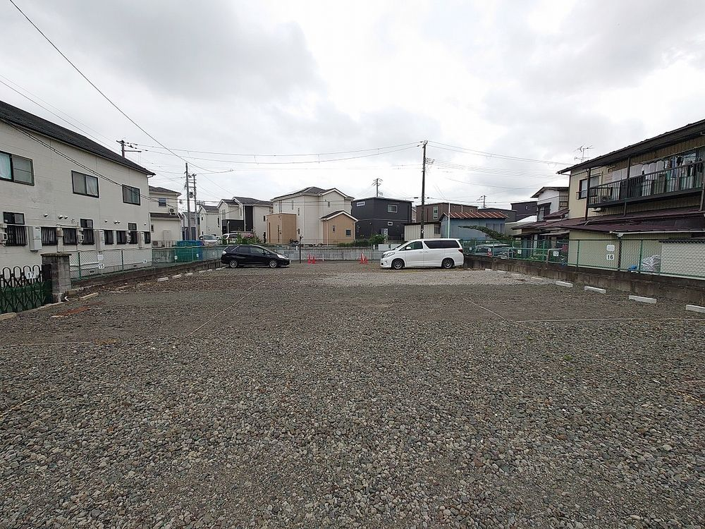
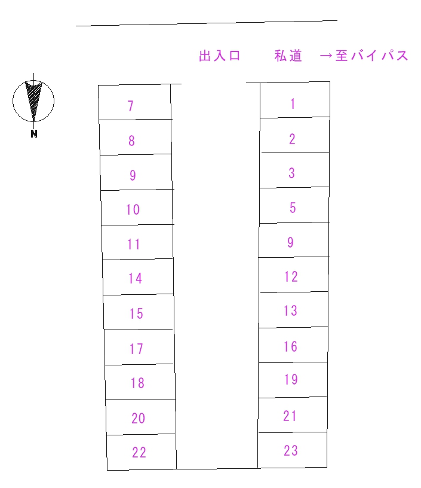

仙台市太白区 東郡山2丁目駐車場
東郡山2丁目駐車場 写真

東郡山2丁目駐車場 区画図

基本情報
物件種目
月極駐車場
所在地
仙台市太白区東郡山２丁目１０−
区画サイズ
2500ｘ5000 平面
賃料
6000円
取引態様
貸主
敷金
1ヶ月
契約手数料
1ヶ月【３月末まで無料！】
仲介が入る場合仲介手数料
1ヶ月
備考
審査有
防犯設備
カメラ4台によるAI入出庫管理システム
情報更新日
2025年12月31日
▶ 空状況を確認する
申込・問い合わせ・内見予約
下記フォームからお申し込み・お問い合わせ・ご予約ください。
内見をされる前に必ずフォームからご予約ください。 契約車以外の侵入は防犯システムが作動し通報されます。
▶ Googleフォームを開く
← 地図に戻る